NetZero: Hacia la Neutralidad de la Huella Digital
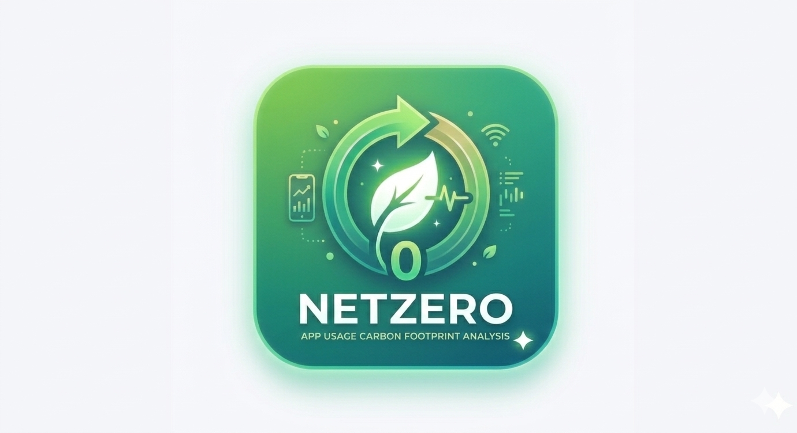
Documento de Alcance
Documento de alcance de la aplicación en donde se especifica la serie de especificaciones que va a cumplir.
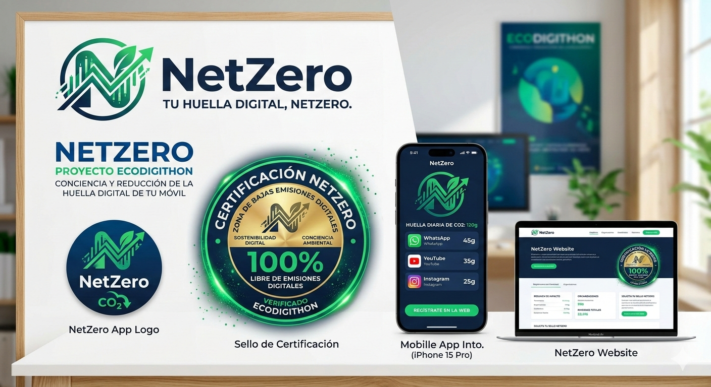
Historia de usuario
Como usuario quiero que me dé el tiempo de uso de cada aplicación para saber cuánto tiempo paso en cada aplicación.
Como usuario quiero que me dé la huella de carbono que produzco cada vez que utilizo una aplicación para poder ser consciente de mi huella de carbono digital.
Como usuario quiero que me ponga en un ranking de cuánta huella de carbono produce mi dispositivo para poder ser consciente de mi huella de carbono digital.
Como usuario quiero que me compare cuánta huella de carbono he producido con algo más visual para poder ser consciente de mi huella de carbono digital.
Como usuario quiero que pueda exportar los datos en un PDF para poder exponerlo de una forma sencilla.
Como empresa quiero poder agregar a todos mis empleados para poder saber la huella de carbono digital que tiene mi organización.
Funcionalidades
Multilenguaje, se incluirá Español e Inglés pero también se planteará meter otros lenguajes orientales como puede ser Mandarín e Hindú.
Intuitiva y accesible.
Poder filtrar y ordenar las aplicaciones.
Creación de un backend para guardar histórico y por dispositivo para compararlo y ver estadísticas globales (Ver por empresa, zonas...).
Descripciones de las pantallas
Pantalla Principal
Objetos con los datos totales de huella de carbono digital y de tiempo de uso del día.
Objetos con los datos de las cinco aplicaciones que más gastan ordenados de la que más gasta a la que menos.
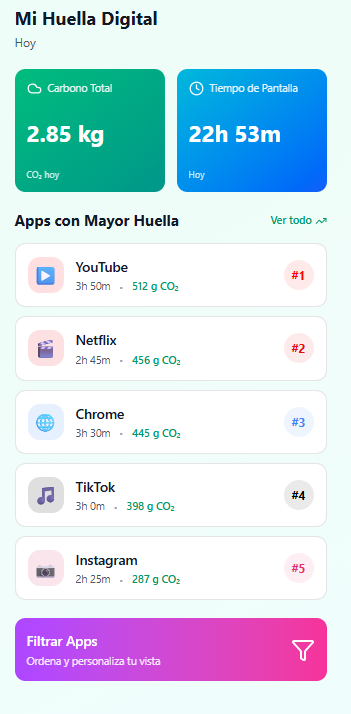
Apartado: Pantalla Principal Web
Dashboard web con métricas globales de huella de carbono digital y tiempo de uso diario.
Gráficos interactivos mostrando las aplicaciones más consumidas.
Navegación intuitiva hacia otras secciones de la plataforma web.
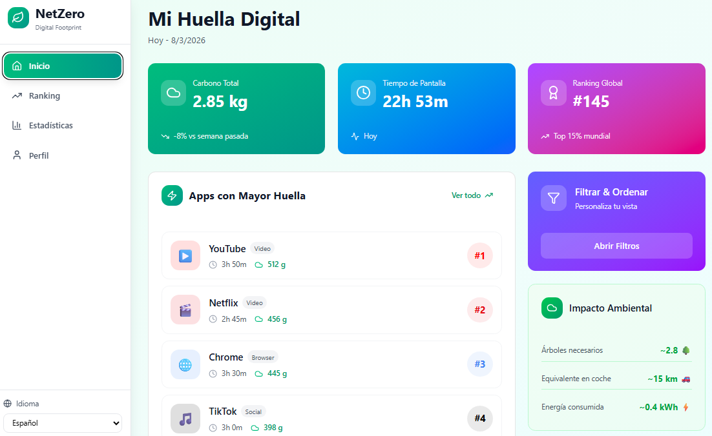
Pantalla detalles
Vista del gasto de cada aplicación desarrollado con datos más útiles.
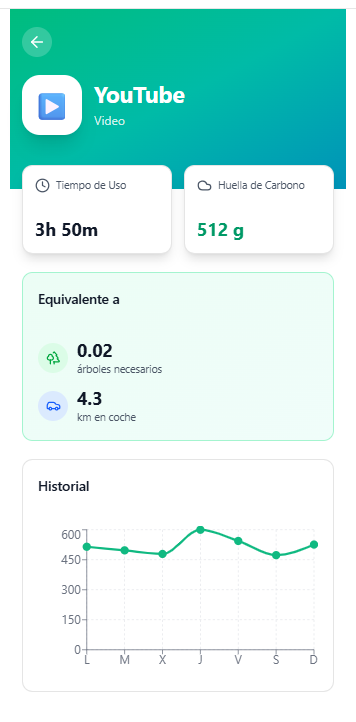
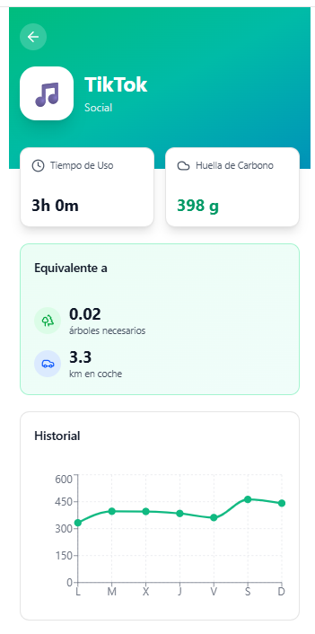
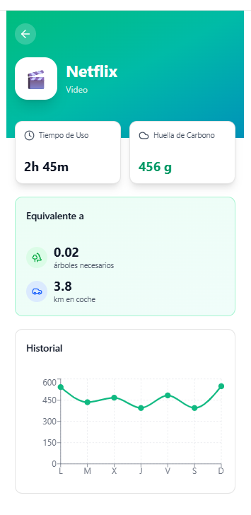
Pantalla Ranking
Vista del ranking de gasto energético personal en tu empresa.
Vista del ranking de gasto energético en tu zona.
Vista del ranking de gasto energético global.
Vista de tu puesto en cada ranking.
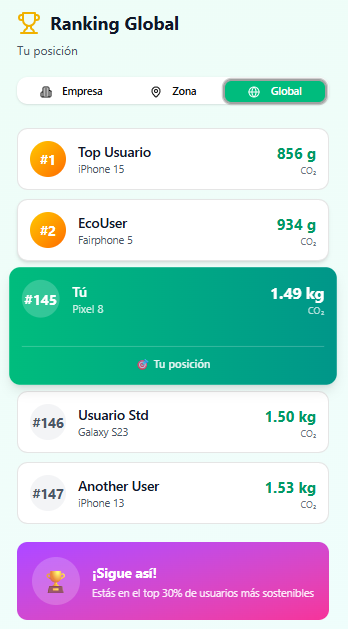
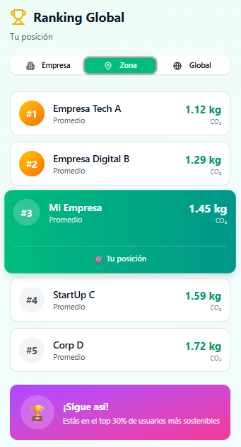
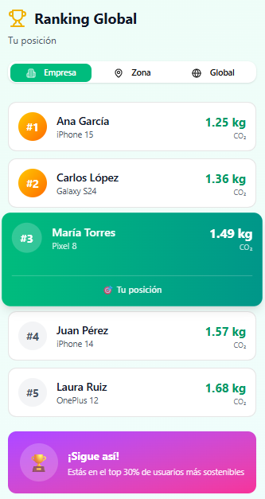
Pantalla Estadísticas
Vista semanal, mensual y anual de los datos.
Gráficos del gasto de carbono personal con gráficos reactivos.
Comparativas con los datos anteriores.
Opción de exportación de los datos a PDF.
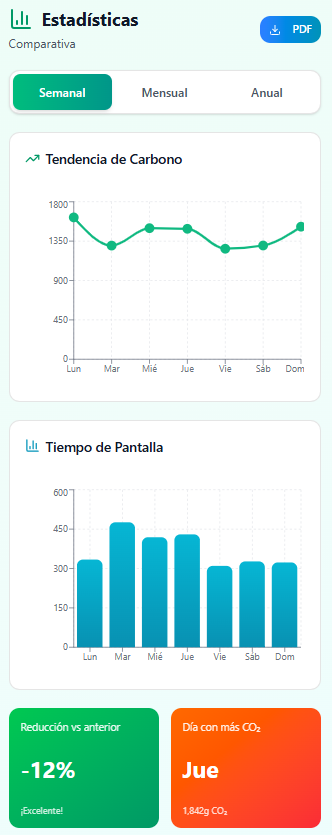
Apartado: Pantalla Estadísticas Web
Visualización avanzada de datos históricos: semanal, mensual y anual.
Gráficos dinámicos y comparativas con períodos anteriores.
Exportación de reportes en PDF y otros formatos para análisis detallado.
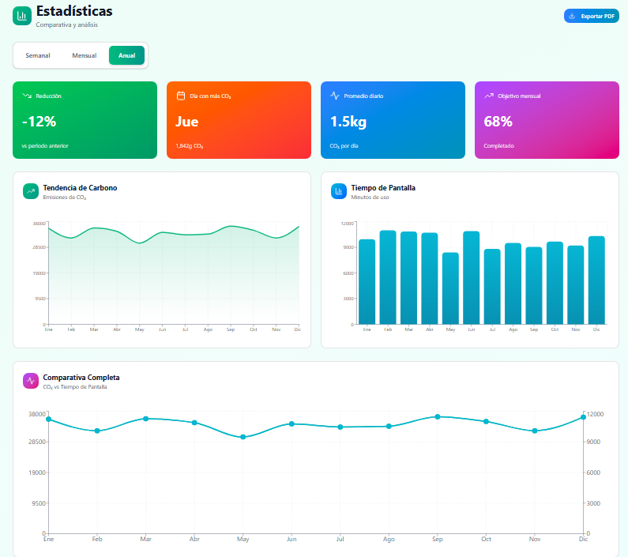
Pantalla Configuración
Vista de los datos del usuario.
Configuraciones del sistema (Idioma, modo claro/oscuro y generales).
Opción de cerrar sesión.
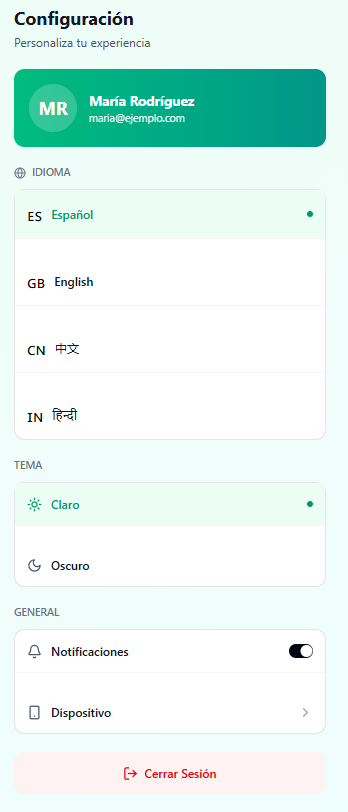
Pantalla Clasificación
Evaluación de la huella de carbono personal mediante una escala de letras de A a F.